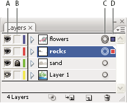
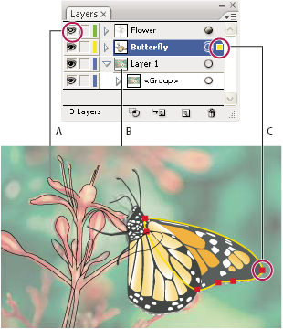

Layers panel overview
You use the Layers panel (Window > Layers) to list, organize, and edit the objects in a document. By default, every new document contains one layer, and each object you create is listed under that layer. However, you can create new layers and rearrange items to best suit your needs.
By default, Illustrator assigns a unique color (up to nine colors) to each layer in the Layers panel. The color displays next to the layer name in the panel. The same color displays in the illustration window in the bounding box, path, anchor points, and center point of a selected object. You can use this color to quickly locate an object’s corresponding layer in the Layers panel, and you can change the layer color to suit your needs.
When an item in the Layers panel contains other items, a triangle appears to the left of the item’s name. Click the triangle to show or hide the contents. If no triangle appears, the item contains no additional items.

- A.
- Visibility column
- B.
- Edit column
- C.
- Target column
- D.
- Selection column
The Layers panel provides columns to the left and right of the listings. Click in a column to control the following characteristics:
- Visibility column
-
Indicates whether items in the layers are visible
 or hidden
(blank space), or whether they are template layers
or outline layers.
or hidden
(blank space), or whether they are template layers
or outline layers.
- Edit column
- Indicates whether items are locked or unlocked. The lock icon indicates that the item is locked and cannot be edited; a blank space indicates that the item is unlocked and can be edited.
- Target column
- Indicates whether items are targeted for application of effects and edit attributes in the Appearance panel. When the target button appears as a double ring icon (either or ), the item is targeted; a single ring icon indicates that the item is not targeted.
- Selection column
-
Indicates whether items are selected. A color box appears when
an item is selected. If an item, such as a layer or group, contains
some objects that are selected and other objects that are unselected,
a smaller selection color box appears next to the parent item. If
all of the objects within the parent item are selected, the selection
color boxes are the same size as the marks that appear next to selected
objects.
You can use the Layers panel to display some items as outlines and other items as they will appear in the final artwork. You also can dim linked images and bitmap objects to make it easier to edit artwork on top of the image. This is especially useful when tracing a bitmap image.

Display options for layered artwork
- A.
- Object displayed in Outline view
- B.
- Bitmap object dimmed to 50%
- C.
- Selected object displayed in Preview view
 Change the display of the Layers panel
Change the display of the Layers panel